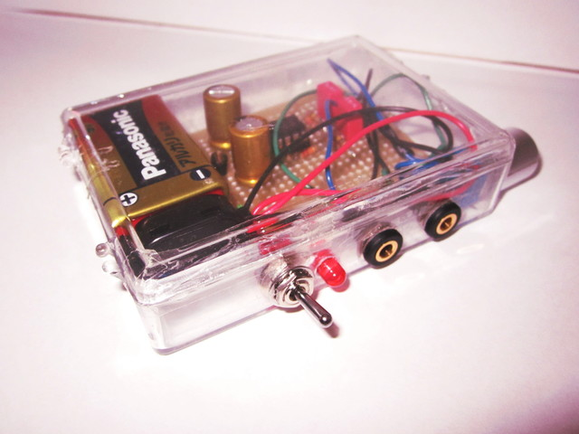
序章
さてわたくしモアイくんは昨冬になんとなく電子工作をする気分になったのです。
理由は特にありません。ただなんとなくアナログなものを作ってみたかったのです。
ただなんとなく、です。で、ですよ。特に使わなさそうなものを作ってもこのさみしいお財布をいじめるだけになるのでなにを作ろうかと
一般的に電子工作マニア(×マニヤ)にはアンプを作る夢があるのではと勝手に推論付け、アンプを作ったらいっぱしの電子工作者になれるのではと勘違いしたわけですね。
ええ、勘違い。
でもアンプだなんて置くところがない、スピーカーもない、部品も高そうだと思いすぐにあきらめました。
だけどみなさん！アンプはアンプだけじゃないんです！
(通販臭くなってきたな)
ヘッドフォンアンプがあるのです！
ヘッドフォンアンプとは！
特徴：
STAXのイヤースピーカーがいい例だが高い電圧が得られ余裕を持って鳴らすことができる。
携帯音楽プレーヤーの電圧は一般的に低く音に迫力が出ないことが多い。
ノイズの軽減などに役立つ
スピーカ用のアンプだとノイズが多いのでとてもつかえたもんではない。
つまり
ヘッドフォンアンプとはスピーカーではなくヘッドフォン専用のアンプであ〜る
とにかく作れ（そんなこと書いていない）
ということでヘッドフォンアンプの概略わかっていただけたでしょうか。
でもですよ。僕は電子工作に関しては、それ以外に関してもですが、素人なんですね。いまだにトランジスタとFETの違いが分からない。
そんなやつに回路図が書けるのか？書けるわけがない。でも作りたいという気持ちはある。
ではどうするか。インターネットから回路図をもらうしかない。
先ほど言った通り素人です。いろいろと回路を見てみたのですがとても作れる気がしません。
回路図を2つにわけるだなんて気がくるっていやがる！
回路解説などなどの章
さて「回路解説」でございます。作るにあたって一つ一つのパーツはわかっておかないといけないでしょ。
ということで部品解説から行きましょ
その1．部品解説
回路解説といってもわからない人にはわからないのです。なにがなんやらわかんないものです。
正直言って僕もよくわかりません。ということで一緒に電子工作で使う主なパーツを見ていきましょう。
目次
オペアンプ抵抗コンデンサー
LEDその他
オペアンプ
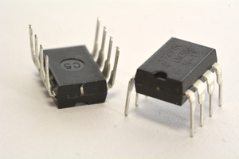
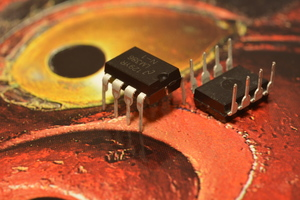
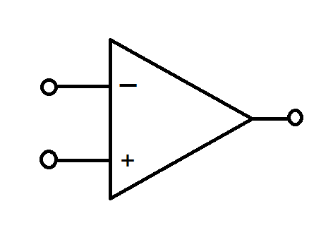
この火星か土星にでもいそうな微生物に見えるものは「オペアンプ」といいます。とってもかわいいけど目に入れたらかなり痛い。食べちゃいた・・・くないほど。
オペアンプとは正式にはオペレーショナル・アンプリファイアといい、アナログ信号を増幅するものです。
このヘッドフォンアンプの心臓部とも言えます。
なによりも大きな特徴として「増幅率がとても大きく無限大にすることもできる」ことです。
そして僕がこのヘッドフォンアンプの製作にオペアンプを使ったのはなによりも回路が簡単にすむからです。回路の設計は別として実際に作るときはピンにさえ気を付ければ簡単にできます。
オペアンプにもいろいろあるようでして、詳しくは調べてもらったらいいのですが
(というか僕が分からない)そして気を付けないといけないのが一回路入りと二回路入りのオペアンプの買い間違いです。
まず僕にはオペアンプの見た目が同じに見えます。(というかこの画像も製作に使ったものではなかったりする。)
一回路入りはヘッドフォンアンプで使うときは片方のチャンネルのみ、つまり左の音なら左のみの音を増幅するので作るときは2つ必要です。
それに対して二回路入りは一つで両チャンネルを動かすことができます。回路自体はそこまで変わらなくても配線の時に大きく変わってくるので注意しましょう。
不安なら店員さんに相談するのがいいかもしれません。
図の一番右はオペアンプの回路記号を表しています。
あとでオペアンプを使った基本的回路について説明します。
抵抗
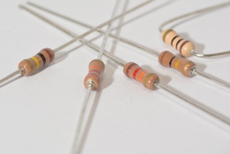
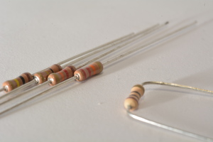
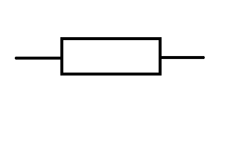
この、みんなで楽しくバーベキュー、みたいな感じの部品は「抵抗」です。（おいしそう・・・）
食べたことはありませんがとてもおいしいことはないでしょう。
いわゆる「V=RI」の式の「R」の正体です。回路図のイメージとは全く違う何かしらのダサさもあるかもしれませんがつかみやすいのでいいとしましょう。
抵抗値は「カラーコード」であらわされます。見えているカラフルな帯がそれです。覚えるしかありません。
抵抗がこのアンプで何に役に立つかというと2つあります。
1.オペアンプを使った回路の増幅率を変える。
2.ボリュームの調整。
2はなんとなくわかるかもしれません。ボリュームです、ボリウム。このアンプでは可変抵抗を使って入力の量を調整し分母自体を変えることで分子も変える。といった感じでしょうか。
1はどうでしょう。わかりません。これまた後のオペアンプの基本回路のところで。
コンデンサー
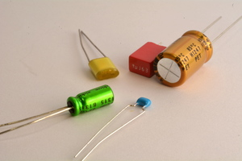
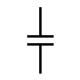
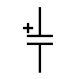
さあ、コンデンサ。上の写真がジャイ〇ンとそれのお供のス〇夫くんが小さいのび〇くんをからかいドラム缶(あれ？)がそれを守っている図にしか見えないですが(ちなみにもう一個はジャ〇アンの権力におびえる女の子)、
コンデンサといいます。全部違うものに見えますでしょ。でも全部同じコンデンサなのです。
コンデンサは電気をためる役割をしています。単位はF(ファラド）。僕はこのパーツが一体何なのかよくわかりません。あくまで回路に入っているから使ったぐらいでこのコンデンサが回路内でどのような理論でどのように、どの目的で動いているのかが分かりません。
ですのであくまで形式上の紹介となります。
さてコンデンサには上の写真だけで3つの種類があります。一つはセラミックコンデンサ、一つは電解コンデンサ、そして最後にフィルムコンデンサ。
それではひとつづつ解説を。
| 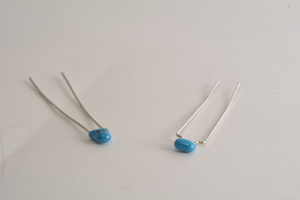 |
1．セラミックコンデンサ・・・セラミックを使っており小型かつ熱に強い。高周波回路などにも使われる。あと安い。 |
| 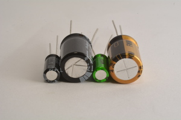 |
2.電解コンデンサ・・・アルミニウムなどの金属と電解質を使っており大きな容量が得られる。そのため電源回路で使われることが多い。注意点としては極性があること。
容量が大きいほど単純にでかくなる。また画像でいうと上から見て銀色の部分が防爆弁にあたり電解コンデンサで電解液が蒸気となって膨張、爆発を防ぐためについています。また、極性は左から2番目のコンデンサでいうと灰色になっている側(この場合向かって左)がマイナスです。帯がある側がマイナスということです。 |
| 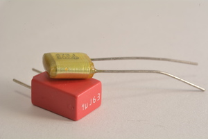 |
フィルムコンデンサ・・・プラスチックフィルムを使っており温度特性が高く高精度らしい。オーディオ回路によく使われる。ちょっとお値段は高めかも。 |
ちなみにコンデンサは一般的にノイズ対策に使われます。コンデンサの性質の一つ、周波数が高い交流の電流をよく通すという性質を用いノイズをカットしています。
また、交流の平滑化で直流に直すのに使われたり、コイルと組み合わせてLCフィルタという低周波をカットし高周波を通すHPF(ハイパスフィルタ)、その逆で低周波を通し高周波を通すLPF(ローパスフィルタ)といろいろな使い方ができます。
ちなみに回路図の記号ですが真ん中の「+」がないほうがフィルムコンデンサ、セラミックコンデンサで右が電解コンデンサの記号です。
LED
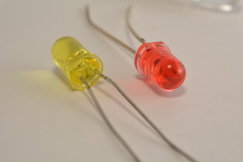
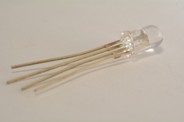
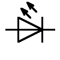
さてLEDです。特に回路に関係があったわけではないのですが電源ランプとして使ったので一応紹介。
近年だと家庭用の電球にLEDが使われたり信号機、駅のディスプレイなどあらゆるところで見かけるLEDですがそのもっとも大きな特徴としては
エネルギー変換効率が高いため熱が出ない、また照明に使われると長寿命、製造過程での有害物質の使用がない、発光色を変えることができる、紫外線をださないことで虫が寄ってこないなどの利点も多いが
その一方で高価格、熱に弱く高速度での明滅があるためビデオの録画に影響が出ることがあるなどの問題点もあります。
それでもそんな欠点を補えるほどの魅力があるのは事実です。小型化ができたり、あと最近だと車のヘッドランプにも使われてるものもあリますね。
さて写真を見ていきましょう。一番右のものが実際に使ったLEDと同じタイプです。黄色と赤色をしています。
真ん中の写真のLEDはなぜか足が4本ありますね。これは「フルカラーLED」といって赤、緑、青すなわちRGBの色を光らせほぼすべての色を表現することができる優れものです。
そして最後に回路図の記号。LEDの名前は「発光ダイオード」でもあります。つまりダイオードです。ダイオードはご存知の方も多いと思いますが片方にのみ電流を通します。
記号を見るとイメージがわくような記号とはなっていますが上の図では「右から左の電流は通さず」、「左から右への電流は通します」。
右から 左へ 受け流す〜 左から 右へは 受け流さない〜♪
図でいう左側をアノード(陽極)といい右側をカソード(陰極)といいます。ダイオードと構造は似ているかと思いますが逆方向への電圧(この場合右から左)をかけた時の耐電圧が低くこれを超えると「BAN！」ってなるため(経験済み)整流用には使えないのです。
その他
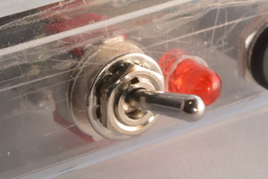
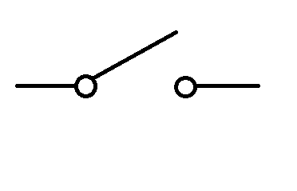
これはトグルスイッチといいます。これをヘッドフォンアンプのスイッチに使いました。1回路1接点(もしくはon-off型)というそうです。
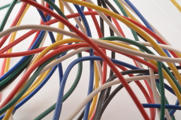
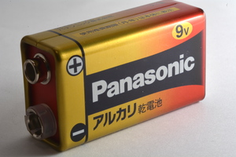
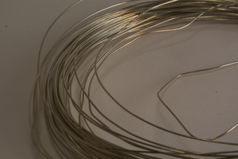
右から順に配線材、9V角型電池、スズめっき線です。
9Vの電池はこれ一つで一般の乾電池6個分の働き(1.5V×6)をします。今回はオペアンプを±4.5V駆動させるのでこれを使います(次回参照)
配線材、スズめっき線の使いわけですがめっき線は基板上の部品と部品をつなぎ、配線材は基板を超えてたとえば入力とボリュームなど空中を通るときに使います。
これで前編はおしまいです。後編は具体的な回路解説などから入っていきます。
byモアイくん
 Twitter フォロー
Twitter フォロー